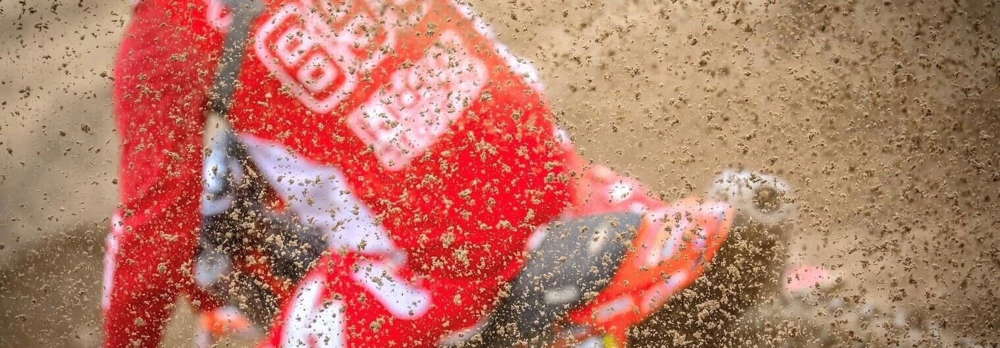
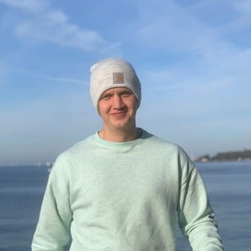

|

Über mich
Hey, ich bin Albert, 22 Jahre alt und komme aus Laboe. Ich habe mit 13 Jahren Dirk von Zitzewitz
kennengelernt, der mich zum Motocrossfahren gebraucht hat. Durch seine Erfahrungen und Erfolge im Rennsport hatte ich gleich
den richtigen Trainer an meiner Seite. Durch seinen Bruder Bert von Zitzewitz, der ein eigenes Rennteam hat,
hatte ich auch gleich ein Team hinter mir stehen, das schon jahrelange Erfahrungen im Motorradsport hatte. Dadurch
konnte ich ziemlich schnell Fortschritte machen. Hinzu kommt noch, dass Bert und Dirk von Zitzewitz auch eine gemeinsame
Motocross- und Enduroschule haben, in der ich über die ganzen Jahre mehr als 40 Trainings mitgemacht habe und so ziemlich
viele Erfahrungen sammeln konnte. ©2021 Albert Schadowski |